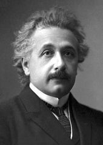
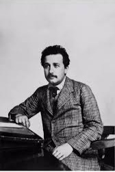
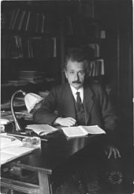
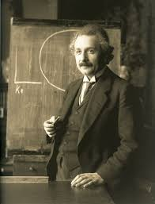

Albert Einstein
Albert Einstein(/ˈaɪnstaɪn/ EYEN-styne; German: [ˈalbɛʁt
ˈʔaɪnʃtaɪn]
(
listen); 14 March 1879 – 18 April 1955) was a German-born theoretical
physicist who developed the theory of relativity, one of the two pillars
of modern physics (alongside quantum mechanics). His work is also known
for its influence on the philosophy of science. He is best known to the
general public for his mass–energy equivalence formula E=mc2, which has
been dubbed "the world's most famous equation" .
He received the 1921 Nobel Prize in Physics "for his services to
theoretical physics, and especially for his discovery of the law of the
photoelectric effect" , a pivotal step in the development of quantum
theory.

Einstein's official portrait
after receiving the 1921
Nobel Prize in Physics

Young Einstein

Einstein at his office,
University of Berlin 1920

Einstein in 1921
FACTS ABOUT ALBERT EINSTEIN
- Born 14 March 1879 Ulm, Kingdom of Württemberg, German Empire
-
Died 18 April 1955 (aged 76) Princeton, New Jersey, United States
- Citizenship
-
Subject of the Kingdom of Württemberg during the German Empire
(1879–1896)
- Stateless (1896–1901)
- Citizen of Switzerland (1901–1955)
- Austrian subject of the Austro-Hungarian Empire (1911–1912)
-
Subject of the Kingdom of Prussia during the German Empire
(1914–1918)
-
citizen of the Free State of Prussia (Weimar Republic, 1918–1933)
- Citizen of the United States (1940–1955)
- Education
-
Federal Polytechnic School in Zurich (Federal teaching diploma,
1900)
- University of Zurich (PhD, 1905)
- Known for
- General relativity
- Special relativity
- Photoelectric effect
- E=mc2 (Mass–energy equivalence)
- E=hf (Planck–Einstein relation)
- Theory of Brownian motion
- Einstein field equations
- Bose–Einstein statistics
- Bose–Einstein condensate
- Gravitational wave
- Cosmological constant
- Unified field theory
- paradox
- Ensemble interpretation
- Awards
- Barnard Medal (1920)
- Nobel Prize in Physics (1921)
- Matteucci Medal (1921)
- ForMemRS (1921)
- Copley Medal (1925)
- Gold Medal of the Royal Astronomical Society (1926)
- Max Planck Medal (1929)
- Member of the National Academy of Sciences (1942)
- Time Person of the Century (1999)
Scientific Career
- Fields
- Institutions
- Swiss Patent Office (Bern) (1902–1909)
- University of Bern (1908–1909)
- University of Zurich (1909–1911)
- Charles University in Prague (1911–1912)
- ETH Zurich (1912–1914)
- Prussian Academy of Sciences (1914–1933)
- Humboldt University of Berlin (1914–1933)
- Kaiser Wilhelm Institute (director, 1917–1933)
- German Physical Society (president, 1916–1918)
- Leiden University (visits, 1920)
- Institute for Advanced Study (1933–1955)
- Caltech (visits, 1931–1933)
- University of Oxford (visits, 1931–1933)
- Thesis
-
Thesis Eine neue Bestimmung der Moleküldimensionen (A New
Determination of Molecular Dimensions) (1905)
- Influenced
- Virtually all Modern Physics